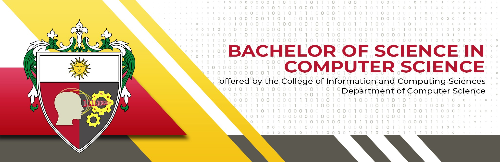
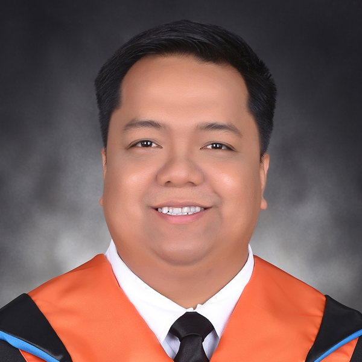

Bachelor of Science in Computer Science
Abbreviation: BSCS
Duration: 4 years
Computer Science is the study of computing, algorithms, programming, and the theory behind software and computer systems.
College of Information and Computing Sciences
University of Santo Tomas
The College of Information and Computing Sciences offers three undergraduate degree programs, each taken over four years, that prepare students for careers in computing, information systems, and information technology.

Abbreviation: BSCS
Duration: 4 years
Computer Science is the study of computing, algorithms, programming, and the theory behind software and computer systems.
Abbreviation: BSIS
Duration: 4 years
Information Systems combines technology and business, focusing on how information systems support organizations and decision-making.
Abbreviation: BSIT
Duration: 4 years
Information Technology focuses on the application, deployment, and management of technology such as networks, systems, and software for users and organizations.
| Program | Abbreviation | Duration | General Focus |
|---|---|---|---|
| Computer Science | BSCS | 4 Years | Computing, algorithms, software and computer science |
| Information Systems | BSIS | 4 Years | Technology and business information systems |
| Information Technology | BSIT | 4 Years | Application and management of information technology |
Handles the BS Computer Science program.
Handles the BS Information Systems program.

Handles the BS Information Technology program.
Computer Science, Information Systems, Information Technology
BS Computer Science, BS Information Systems, BS Information Technology